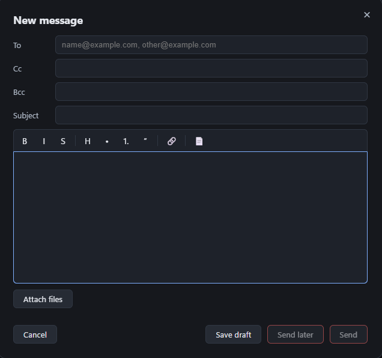

Multiple accounts, each a separate inbox, with send-as addresses. The accounts
dropdown carries each account's unread count; picking one opens its inbox,
including the account you are already in. Mail arriving on an account you are
not in lights a second, outlined badge on the closed dropdown. It lights only for
an account holding unread mail newer than your last visit there, so a standing
backlog never lights it, then shows those accounts' unread total
An optional unified mailbox that merges every inbox into one list, each row dotted
with its account's colour
Instant new mail over IMAP IDLE with a desktop notification, plus an unread badge
on the taskbar on Windows. A push checks only the account that sent it and only an
inbox that has grown counts as new mail, so a server that repeats itself on the
idle line does not set off a check every few seconds
Gentle on your provider's sign-in limits: a full sync of an account signs in once
and one idle connection per account is kept between your actions (opening,
marking, moving), then closed after five minutes with nothing to do. That matters
for providers that block a client which signs in too often
On Windows each of the three things PigeonPost announces has its own chime, so new
mail, a calendar reminder and a returning snoozed message are told apart by ear;
elsewhere the sound is the one your desktop theme chooses
Registers for mailto: links on Windows, macOS and Linux; once you choose it as
your default email app, a mailto: link on a web page opens a new message here,
ready addressed
✍️ Writing and sending
Rich-text compose with To, Cc and Bcc, per-account signatures, reply, reply-all and
forward
Paste an image and it embeds in the body right where the cursor is, sent as a
proper inline image every mail client renders; paste or drop any other file and
it attaches
Start typing in To, Cc or Bcc and matching people from your contacts are
suggested; accepting one just inserts text, so you can still edit it freely;
the list flows on so the next address can be typed straight away
Attach files or attach a whole message to a new one with Attach to new
message
The compose window moves: drag it by its title bar to uncover the message you
are answering; every new message still opens centred
Send later from presets or an exact time; the message waits in the Outbox with
Cancel send (a paperclip shows when it carries files) and leaves while the app runs or at the next launch after that time
A send the server cannot take right now, because it is unreachable or says it is
temporarily unavailable, waits in the Outbox and goes at the next sync rather than
failing
📄 Templates and drafts
Reusable message templates, a local crash autosave and a discard
confirmation, so a part-written message is never lost silently
A template carries its attachments as well as its subject and body, so inserting
one brings all three into the message at once. The files are stored rather than
pointed at, so a template still attaches what it promised after the original has
been moved, renamed or deleted; a template heavier than a single message may
carry is refused when you save it, with the reason shown in the editor
Save a half-written message as a draft and pick it up later: a draft reopens
in the compose window with its recipients, subject, text and attached files as
you left them (only Bcc needs typing again) and finishing it replaces the
stored copy, so the Drafts folder never fills with stale versions
🗂️ Folders and tags
Colour tags that sync across devices as IMAP keywords, plus read, star and junk marks.
A read, star or tag change the server has not yet taken waits on your machine; the
next sync sends them as one batch per folder and clears each once the server
confirms it
Nested folders you create and reorganise by drag: the plus beside the Folders
heading makes one at the top level and New subfolder on a folder's right-click
menu makes one inside it; the arrangement you settle on
is remembered per account and survives updates, plus any reinstall that keeps
your data
Drag mail into a folder and it goes at once: the message leaves the list on the
drop rather than after the server has caught up, the folder that took it flashes
so you can see where it went; holding a drag near the edge of the folder
pane scrolls it so anything below the fold is still reachable
Drag one message or a whole selection: Ctrl-click picks scattered rows and
Shift-click picks a run, then dragging any row of that selection takes all of it
Ctrl+A selects the whole folder, including the messages you have not scrolled
to yet, so a delete, move or mark acts on everything in it; marking a selection
read updates every unread badge at once
👀 Reading
Message HTML renders faithfully in a sandboxed frame that keeps the sender's own
styling while running no scripts, with remote images and CSS backgrounds held back
until you load them (or tick Load images by default)
In the dark theme the reader darkens each part of a message by the background its
sender actually chose, so one that mixes a dark brand panel with a white footer
reads correctly throughout and photos and logos keep their true colour
Only the message body scrolls: the sender, the subject and the toolbar stay pinned
above it and the attachments stay pinned at its foot, so Open and Save are one
click away on a long reply chain instead of buried under every quoted round
Dialogs keep their title and leading fields in view the same way, from the
compose window's addresses to an event's title and a rule's name, while the rest
of the form scrolls
Turn on the conversation view and the header above a grouped exchange opens it
whole: every message of the thread gathered from across the account's folders, so
the reply you sent sits with the message it answers instead of staying out of
sight in Sent. Each one names the folder it lives in and opens in place to read
Snooze hides a message until a chosen time then returns it untouched, with a
banner in the window you can click to open it and a desktop notification
Print a message through the system print dialog; remote images print only once
you have loaded them
Help > Guide names the pictures along the top bar, in the folder list and in
the strip at the foot of the window; it states the rules the
windows cannot state for themselves: what is held on your machine, what a
permanent delete means and what a snooze or a scheduled send needs from the app;
each section's heading holds at the top while that section is read

Writing a message: rich text, reusable templates and file
attachments.